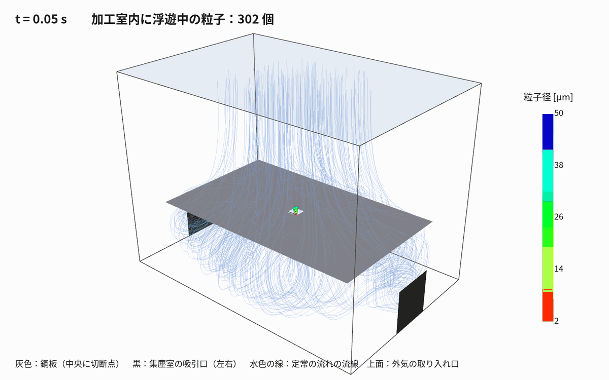

作成日：2026-11-03 OpenFOAM v2512
手法選定の再調査（2026-11-04）：02 文献に基づく解析手法の選定。微細煙の濃度・加工後の除去時間には非定常スカラー輸送を主解析にする方針。以下は既存の粒子追跡による予備解析の記録。

レーザー切断では、材料・板厚・レーザー条件・アシストガスによって粒子の大きさや発生量が変わる。集塵性能はフード形状、発生源との距離、流量、周囲気流にも左右されるため、文献の数値を対象機へそのまま転用できない。今回の設定に関係する公開資料を、対象との近さと使い方を分けて整理する。
| 事例 | 内容 | 参考にした点 |
|---|---|---|
| 熱加工機の集塵装置（特許 6240477） | 加工エリアの下に上が開いた集塵室を設け、送気と吸気を向かい合わせてヒュームを除去 | 板の下の集塵室から吸う形（本モデルの基本形） |
| 福岡県工業技術センター 研究報告（2024） | 溶接ヒュームをレーザーシートで可視化し、CFD（2 次元・SST k-ω）の条件を合わせ込み | 乱流モデル SST k-ω、可視化との比較の考え方 |
| Zhang ら（Nuclear Power Engineering, 2025） | レーザー切断エアロゾルを CFD＋DPM で解析し、フード角度と排気流量を比較 | 流れ＋粒子追跡の構成と、形状・流量を比較する考え方。数値条件や捕集率を対象機へ直接移さない |
| Liu ら（Building and Environment, 2026） | コンクリートブロックのレーザー切断で、エアカーテン付きフードを CFD と実験で評価 | CFD を実験で検証する重要性。材料・加工機・フードが異なるため、効率値は本件に適用しない |
| 金属板レーザー切断の粒子特性（2022） | 複数金属板のレーザー切断で発生粒子を測定。微小粒子が多いことを報告 | 本 run001 の 2–50 µm 粒子を実ヒュームそのものと見なせない根拠 |
| LLNL（2003）ダウンドラフトテーブルの CFD | 部屋全体とダウンドラフトテーブルの気流・汚染物質の輸送 | 吸引テーブルを含む部屋全体を解く |
| 福岡県工業技術センター（2024） | 溶接ヒュームをレーザーシートで可視化し、SST k-ω の CFD と比較 | 溶接を対象とした参考例。粒子発生位置・条件を合わせて可視化や測定と照合する考え方 |
| SimScale（メーカー事例） | プラズマテーブル・ダウンドラフトの区画設計 | 区画ごとの吸引の偏り |
保存した文献：refs/（福岡県工技センター報告 PDF、特許
6240477 の HTML）。 リンク：
simpleFoam（非圧縮・定常・SST
k-ω）で、加工室と集塵室の空気の流れを解く。icoUncoupledKinematicParcelFoam
で、1 の速度場を固定したまま、
切断点から出るヒューム粒子を時間とともに動かす（粒子は流れに影響しない一方向連成）。ヒュームの濃度は低いので、粒子が空気の流れを変える効果は無視できる、という考え方。
run001_underTableSuction_Q0.30/flow）| 項目 | 値 |
|---|---|
| 加工室 | x 0〜1.2 m、y −0.3〜0.6 m（鋼板の高さ y = 0）、z 0〜0.8 m |
| 鋼板 | x 0.1〜1.1、z 0.1〜0.7 m の薄い壁（createBaffles
で作る両面の壁）。周囲に 0.1 m のすき間 |
| 切断点 | 鋼板の中央 (0.6, 0, 0.4) に 50 × 50 mm の開口 |
| 集塵室 | 鋼板の下、深さ 0.3 m |
| 吸引口 | 集塵室の左右の側壁（x = 0 と 1.2、y −0.3〜−0.1、z 0.3〜0.5） |
| 外気の取り入れ口 | 天井全面（大気圧） |
| メッシュ | 25 mm の六面体、48 × 36 × 32 = 55,296 セル |
解像度上の注意：切断開口 50 × 50 mm はこのメッシュで幅・奥行き各 2 セルしかない。開口近傍の速度勾配や粒子の通過割合を定量予測するには粗く、開口・すき間・吸引口の局所細分化とメッシュ依存性確認が必要。
作成手順：blockMesh →
topoSet（鋼板・吸引口の面を選ぶ）→
createPatch（吸引口）→
createBaffles（鋼板）
flow/）| 項目 | 設定 |
|---|---|
| ソルバ | simpleFoam（SIMPLE
法、consistent yes） |
| 乱流モデル | k-ω SST |
| 空気 | 動粘性係数 1.5×10⁻⁵ m²/s |
| 吸引口 | flowRateOutletVelocity 合計 0.30 m³/s（約 1,080
m³/h） |
| 天井 | totalPressure p₀ =
0（大気圧）、pressureInletOutletVelocity |
| 壁・鋼板 | すべりなし、壁関数 |
| 反復 | 1,500 回 |
結果の確認：流量積分は吸引口から 0.300 m³/s、天井からの流入 0.299956 m³/s で、差は約 0.0146%。ただし U・p の初期残差は最終反復でもおおむね 1e-2 程度で、指定反復数に達しただけで収束判定を満たしていない。流量収支が合うことは、局所流れの収束やモデル妥当性を保証しない。粒子計算には反復 1500 の速度場を暫定的に使用した。
particles/）| 項目 | 設定 |
|---|---|
| ソルバ | icoUncoupledKinematicParcelFoam（固定した速度場の上で粒子だけを動かす） |
| 速度場 | flow/1500/U をコピー、空気の密度 1.2 kg/m³、粘度
1.8×10⁻⁵ Pa·s |
| 粒子 | 密度 5,000 kg/m³（酸化鉄）、直径 2〜50 µm（Rosin–Rammler 分布、代表径 15 µm） |
| 力 | 抗力（球）＋重力 |
噴出 1：上向きの煙 plumeUp |
切断点の上から、上向き 1.5 m/s、広がり角 35°、0〜2 秒に 6,000 個 |
噴出 2：溝から下向き kerfDown |
切断点の下から、下向き 20 m/s（アシストガスで吹き下ろされる）、広がり角 10°、0〜2 秒に 6,000 個 |
| 壁との当たり方 | 吸引口・天井：抜ける（escape）、壁・鋼板：くっつく（stick） |
| 時間 | 0〜3 秒、Δt = 2 ms、0.05 秒ごとに書き出し |
| 乱流拡散 | なし（dispersionModel none） |
| 行き先 | 個数 |
|---|---|
| 吸引口から抜けた | 6,123 |
| 天井から抜けた | 0 |
| 壁・鋼板にくっついた | 336 |
| まだ計算領域内にある（沈着分を含む） | 5,879 |
| うち未沈着で浮遊中 | 5,543 |
合計 12,002 parcel（2噴出×6,001）の収支は 6,123 + 336 + 5,543 = 12,002。イベント記録を境界別に集計すると、退出した parcel は全て吸引口、天井退出は 0 だった。**これは本計算の仮定内での parcel 追跡結果であり、実機の捕集率 6,123/12,002 = 51.0% を意味しない。**注入 parcel 数は質量濃度・粒径別個数の実測を反映しておらず、噴出速度・発生量・流れ場も実測検証されていない。多数が領域内に残り、3 秒時点では定常的な除去性能を表さない。
追加計算の進行状況と結果は完了後に記入する。比較は同じ簡略形状・粒子条件で吸引流量だけを変える数値モデル内の感度試験であり、実機の推奨ファン流量や安全性評価ではない。左右側面吸引口の合計面積は 0.08 m² なので、幾何平均速度は Q=0.15 / 0.30 / 0.60 m³/s に対し 1.875 / 3.75 / 7.5 m/s。
dispersionModel none で乱流拡散を無視し、Brown
運動・凝集・蒸発/凝縮・沈着再飛散も扱わない。20 m/s
は粒子初期速度であって、流体のアシストガスを解いた結果ではない。cd /mnt/d/work/002_CAE/openfoam/20261103_laserFumeExtraction
python3 tools/make_fume_cases.py run001_underTableSuction_Q0.30 '{"Q":0.30}'
openfoam2512 -c './run001_underTableSuction_Q0.30/Allrun'
python3 tools/render_fume.py run001_underTableSuction_Q0.30 # images/fume_*.png と GIFParaView で見るときは flow/post.foam と
particles/post.foam を開く（y 軸が上）。